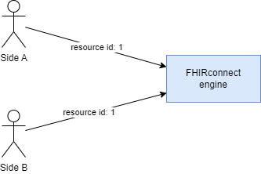
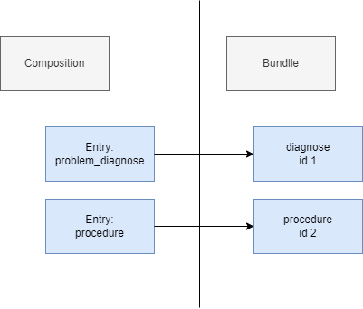

ID-Management EHR ID and Patient The engine should maintain a table that relates an patient id in FHIR to a openEHR EHR id. Resource IDs FHIR requires that resource IDs must be unique within a FHIR server. This creates several challenges. The FHIRconnect engine must: 1. Maintain these IDs to ensure that the same ID is returned when mapping a FHIR resource multiple times. 2. Resolve an external ID to the same internally maintained ID. It cannot simply copy external IDs, as this could lead to unique identifier conflicts (e.g., two different sources might send the same ID). Thus, the engine must implement its own ID management. As an example, this issue could otherwise cause a conflict:  Keeping the external ID has advantages: It allows the engine to process a PUT request. It enables the engine to retrieve already mapped Compositions by resolving the ID, instead of creating duplicates. This can be achieved by maintaining a table that tracks mapped resources, including their input. Here is a possible pseudocode representation: URL of sending site External Resource ID Internal Resource ID Composition ID http://someFHirServer.com List of resource IDs in the Bundle Corresponding list of internal IDs in the FHIRconnect engine 12312-123123 Be aware that if a site sends the same Bundle twice but omits a resource that was included in a previous version, it will be treated as a different mapping. This could lead to missing references or other inconsistencies, as the list of IDs is always matched against each other. Deterministic IDs When exporting openEHR data to FHIR, the resource IDs in the Bundle must remain consistent. If the input was not previously provided in FHIR, the system must generate a deterministic ID. Every time we export a Composition into FHIR, the resource IDs must remain the same.  To ensure deterministic IDs, we recommend generating an ID based on a hash of the Composition UID and the Entry Path. This guarantees that the resource ID remains stable across exports. Bundles Demographics